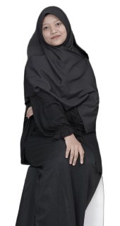

Nabiel Maulidina Prihastity
Mahasiswa Informatika di Universitas Muhammadiyah Malang
Selamat datang di website portfolio saya!
About Me

Tentang aku, jika seseorang belum mengenalku, aku biasanya terlihat pendiam.
Namun, setelah akrab, aku akan menjadi sosok yang penuh percakapan, tingkah laku yang aktif, dan menceritakan beragam hal secara spontan.
Saat aku mengerjakan tugas, aku menjadi sangat fokus dan tidak mudah terganggu.
Pada awal pertemuan, aku cenderung pendiam, namun seiring berjalannya waktu, aku akan menjadi lebih terbuka dan banyak berbicara.
Ketika aku marah, aku cenderung menjadi lebih diam.